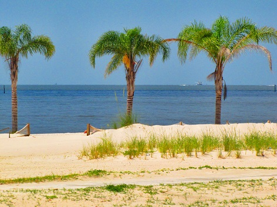

Holiday in the Sun

The west pier overlooking Howth is where you can find some of the best seafood in the country.
Beshoff's is rumored to have the best fish & chips in the area. Because this place sells caught fish
directly from the seaside, you can't get any fresher than right from the sea to your plate. Even if you're looking
for something else there are plenty of options. The Abbey Tavern has a vegan menu for people that would prefer
plant based meals.
A Quiet Beach To Relax
There are several options for delicious meals in Howth.
Beshoff's is rumored to have the best fish & chips in the area. Because this place sells caught fish
directly from the seaside, you can't get any fresher than right from the sea to your plate. Even if you're looking
for something else there are plenty of options. The Abbey Tavern has a vegan menu for people that would prefer
plant based meals. Beshoff's is rumored to have the best fish & chips in the area. Because this place sells caught fish
directly from the seaside, you can't get any fresher than right from the sea to your plate. Even if you're looking
for something else there are plenty of options. The Abbey Tavern has a vegan menu for people that would prefer
plant based meals. Beshoff's is rumored to have the best fish & chips in the area. Because this place sells caught fish
directly from the seaside, you can't get any fresher than right from the sea to your plate. Even if you're looking
for something else there are plenty of options. The Abbey Tavern has a vegan menu for people that would prefer
plant based meals.
The best way to end a sunny day in Howth is with an ice cream cone by the sea.
Nearby there is a small ice cream shop to stop by for a scoop which come in various
fresh flavours in an Italian style gelato, of which is all homemade.
Follow this link to find out more